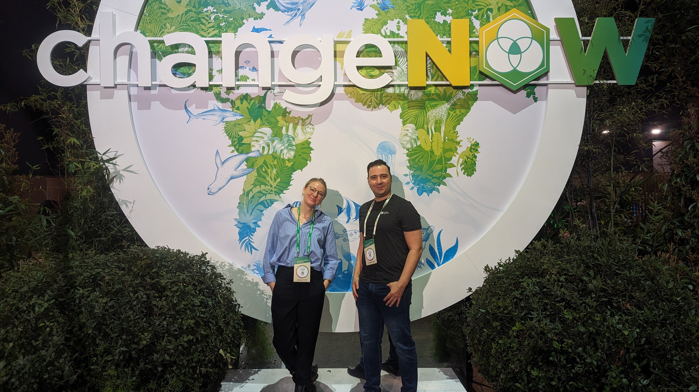

Attendee · Humanitarian OpenStreetMap Team

Attended the ChangeNOW Summit 2024 alongside the HOT team. ChangeNOW is one of Europe's leading events for solution-driven innovation, bringing together changemakers across climate, technology, and social impact. Attending alongside HOT colleague Sophie Mower — who participated in the First Responders panel — the summit offered an opportunity to explore how AI mapping tools like fAIr intersect with the broader movement for ethical innovation and climate-resilient communities.
The event reinforced the importance of positioning open geospatial data as critical infrastructure for humanitarian and environmental response.
ChangeNOW website